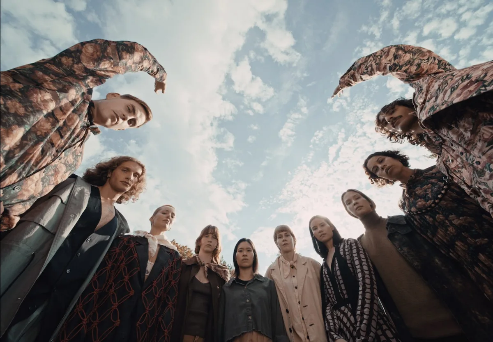

BETTER THAN BEFORE · Oli
Directed by HEINI SUSANNE
Music Video

DRIVING FORCES · Ego
Directed by HEINI SUSANNE
Narrative

CHROMATIC WINTER · Milly
Directed by STEFAN SAGMEISTER & JESSICA WALSH
Commercial

BLOOM
Directed by DIANA DAHLLUND
Commercial

DRIVING FORCES · Desire
Directed by HEINI SUSANNE
Narrative

DRIVING FORCES · Longing
Directed by HEINI SUSANNE
Narrative

AALTO JUNIOR
Directed by LAURI ELSTELÄ
Commercial
LOPPUA UHKAAVA SYKLI · Kaisa Ottelin
Directed by PATRIK SUNDBERG
Music video